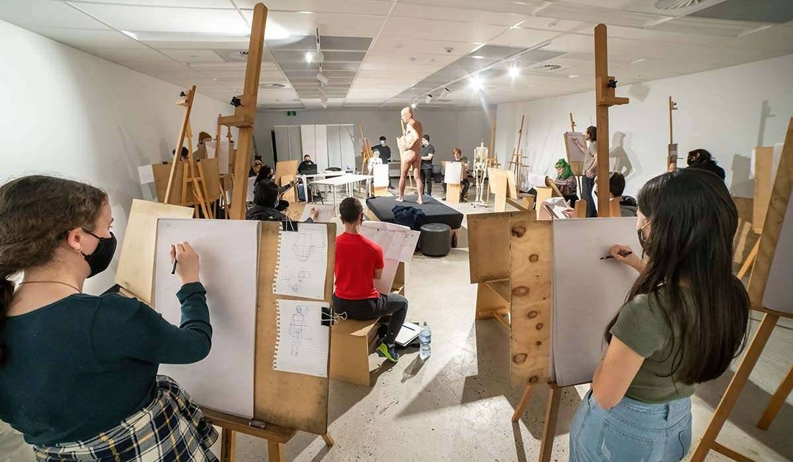
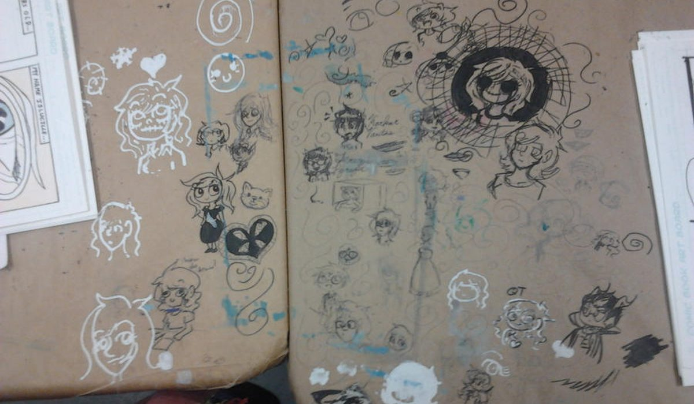

En bref
Après le bac, on étudie l’animation 3D dans une école spécialisée en cinq ans, avec une première année artistique, ou en passant par une prépa artistique, un BTS ou une licence avant une école. La voie la plus directe reste l’école reconnue par le RECA, qui recrute en général hors Parcoursup sur entretien et portfolio.
- La plupart des écoles d’animation 3D recrutent hors Parcoursup, sur entretien et portfolio
- Un cursus complet dure cinq ans après le bac et mène à un titre de niveau bac+5 dans les meilleures écoles
- Le RECA regroupe 34 écoles françaises de cinéma d’animation et de VFX reconnues par la profession
- Les sessions d’admission ouvrent souvent dès novembre de l’année de terminale
Sommaire de ce guide
Les six parcours après le bac
Il n’y a pas de voie unique. Le bon chemin dépend de votre niveau en dessin, de votre budget et de votre certitude. Un élève qui sait depuis la seconde qu’il veut animer des personnages n’a pas le même parcours que celui qui hésite encore entre cinéma et illustration.
| Parcours | Note /10 | Durée | Admission | Coût | Pour qui |
|---|---|---|---|---|---|
| École spécialisée en 5 ansNotre choix | 8,4 | 5 ans | Entretien et portfolio | Élevé, alternance en fin de cursus | Les profils décidés |
| Prépa artistique puis école | 7,8 | 1 + 4 ou 5 ans | Dossier | Prépa payante en général | Les profils qui doivent muscler leur dessin |
| BTS ou DN MADE puis école | 7,4 | 3 + 2 ans | Parcoursup | Faible dans le public | Les profils qui veulent une base large |
| Mise à niveau en arts appliqués puis école | 7,2 | 1 + 4 ans | Dossier | Faible dans le public | Les profils venus d’un bac général |
| Licence arts ou cinéma puis master | 7,0 | 3 + 2 ans | Parcoursup | Frais universitaires | Les profils plus théoriques |
| Formation courte en ligne | 5,4 | Quelques mois | Libre | Variable | Les curieux qui veulent tester |
Notes Comparécoles de novembre 2026, pondérées par l’accès aux studios d’animation.
L’école spécialisée, la voie la plus directe
Les écoles d’animation 3D reconnues proposent un cursus de cinq ans. La première année est artistique, dessin d’observation, perspective, couleur, histoire de l’art. Les années suivantes passent à la 3D, à l’animation de personnages, aux effets visuels, puis au film de fin d’études.
- Vérifiez que l’école appartient au RECA, gage de reconnaissance par la profession
- Regardez le niveau du titre délivré, un titre RNCP de niveau 7 équivaut à un bac+5
- Demandez à quelle année commence l’alternance, elle change le coût total
- Regardez les films de fin d’études des trois dernières promotions, c’est le meilleur indicateur du niveau

Parcoursup ou hors Parcoursup
C’est la confusion la plus fréquente. La majorité des écoles privées d’animation recrutent hors Parcoursup, avec leurs propres sessions d’admission. Les BTS, les DN MADE et les licences passent au contraire par Parcoursup.
| Formation | Plateforme | Calendrier | Ce qu’on vous demande |
|---|---|---|---|
| École privée d’animation | Hors Parcoursup | Dès novembre de la terminale | Entretien et portfolio |
| DN MADE et BTS | Parcoursup | Vœux de janvier à mars | Dossier scolaire et projet motivé |
| Licence arts ou cinéma | Parcoursup | Vœux de janvier à mars | Dossier scolaire |
Calendrier type, à vérifier chaque année sur Parcoursup et sur le site de chaque école.
Ne misez pas tout sur une seule école. Candidatez dans deux ou trois écoles hors Parcoursup et gardez des vœux Parcoursup en sécurité.
Préparer son portfolio
Le portfolio fait la différence bien plus que les notes. Les jurys veulent voir du dessin d’observation, des recherches de personnages, des carnets, de la curiosité. Une seule belle image ne suffit pas, une progression visible convainc davantage.

Commencez en première. Dessinez des gens dans les transports, des animaux, des objets sous plusieurs angles. Ajoutez quelques essais en 3D si vous en avez, sans les mettre en avant au détriment du dessin.
Comment choisir son parcours
Si vous êtes sûr de votre choix et que votre dessin est solide
Visez directement une école spécialisée membre du RECA.
Si votre dessin doit encore progresser
Une année de prépa artistique vous fera gagner du temps et ouvrira des écoles plus sélectives.
Si votre budget est limité
Un BTS ou un DN MADE public, puis une école avec alternance en fin de cursus.
Notre verdict
Après le bac, l’école spécialisée en cinq ans reconnue par le RECA reste la voie la plus directe vers les studios d’animation 3D. La prépa artistique et le passage par un BTS ou un DN MADE sont de bonnes alternatives quand le dessin ou le budget l’exigent.
Si votre priorité est d’aller vite, candidatez hors Parcoursup dès novembre. Si votre priorité est la sécurité, doublez vos candidatures d’école par des vœux Parcoursup.
Questions fréquentes
Où étudier l’animation 3D après le bac ?
Dans une école spécialisée en cinq ans, idéalement membre du RECA, qui recrute sur entretien et portfolio. Une prépa artistique, un BTS, un DN MADE ou une licence peuvent aussi préparer l’entrée en école.
Les écoles d’animation 3D sont-elles sur Parcoursup ?
La plupart des écoles privées d’animation recrutent hors Parcoursup. Les BTS, DN MADE et licences passent en revanche par Parcoursup.
Quel bac pour faire de l’animation 3D ?
Aucun bac n’est obligatoire. Une spécialité arts plastiques aide, mais le portfolio compte davantage que la filière.
Combien d’années d’études pour être animateur 3D ?
Cinq ans après le bac dans la plupart des écoles reconnues, pour un titre de niveau bac+5.
Faut-il savoir dessiner pour faire de l’animation 3D ?
Oui, le dessin d’observation reste la base de la sélection et du métier, même en 3D.
Notre méthode
Ce comparatif repose sur des données publiques, vérifiables une par une.
- Les frais de scolarité sont relevés sur les pages tarifs des écoles, pour l’année 2027-2028 quand elle est publiée
- Les diplômes sont vérifiés au Répertoire national des certifications professionnelles et auprès de la CTI
- Les taux d’insertion sont ceux que les écoles publient, avec les promotions concernées
- Les classements cités sont ceux de GAMEducation, du Figaro Étudiant, de The Rookies et d’Animation Career Review
- Les avis d’étudiants et de diplômés proviennent des forums d’orientation et des plateformes d’avis vérifiés